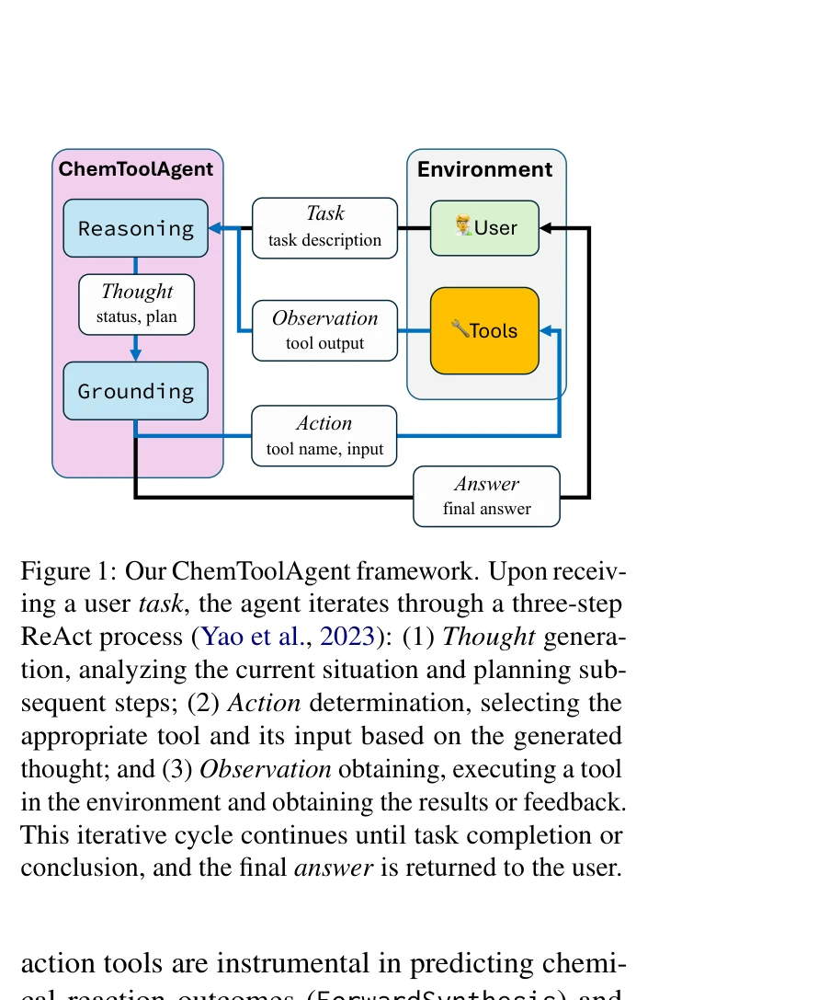
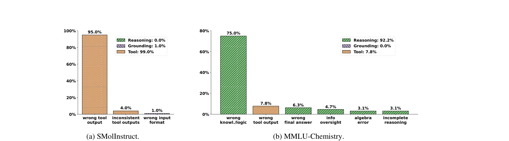

저자: Botao Yu, Frazier N. Baker, Ziru Chen, Garrett Herb, Boyu Gou | 날짜: 2024 | URL: https://arxiv.org/abs/2411.07228

Figure 1: Our ChemToolAgent framework. Upon receiv-
ChemToolAgent는 29개의 도구를 통합한 화학 문제 해결 LLM 에이전트이며, 전문화된 작업에서는 도구 증강의 효과가 있지만 일반 화학 문제에서는 기본 LLM을 능가하지 못함을 보여준다.

Figure 2: The error statistics of CTA (GPT) on SMolInstruct (102 errors) and MMLU-Chemistry (64 errors).
Figure 1: Our ChemToolAgent framework. Upon receiv-
총평: ChemToolAgent는 도구 증강 에이전트의 장단점을 명확히 규명한 중요한 실증적 연구이며, 도구가 항상 성능을 개선하지 않는다는 반직관적 발견은 향후 화학 LLM 에이전트 설계에 중요한 함의를 제공한다.